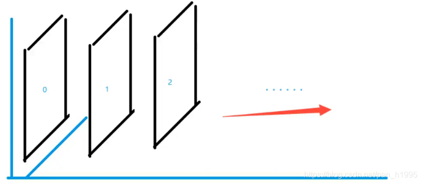
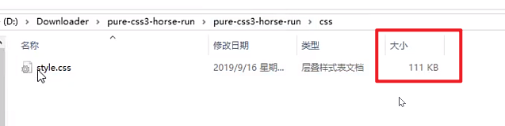

参考：狂神说Java
制作：小邹[yw_forgit@163.com] •
日期：2021-02-09 - 2021-02-17
https://blog.csdn.net/pan_h1995/article/details/105827181
1、什么是CSS
如何学习
- CSS是什么
- CSS怎么用（快速入门）
- CSS选择器（重点+难点）
- 美化网页（文字，阴影，超链接，列表，渐变…）
- 盒子模型
- 浮动
- 定位
- 网页动画（特效效果）
1.1、什么是CSS
Cascading Style Sheet层叠样式表 CSS：表现（美化网页） 字体，颜色，边距，高度，宽度，背景图片，网页定位，网页浮动
1.2、发展史
CSS1.0 CSS2.0：DIV（块）+CSS，HTML与CSS结构分离的思想，网页变得简单，SEO CSS2.1：浮动，定位 CSS3.0：圆角、阴影、动画…浏览器兼容性~
1.3快速入门
x
<!DOCTYPE html>
<html lang="en">
<head>
<meta charset="UTF-8">
<title>Title</title>
<!--规范，<style>可以编写CSS的代码，每一个声明最好以“;”结尾
语法：
选择器{
声明1;
声明2;
声明3;
}
-->
<style>
h1{
color: crimson;
}
</style>
</head>
<body>
<h1>CSS测试</h1>
</body>
</html>
建议使用这种规范

CSS的优势： 1、内容和表现分离； 2、网页结构表现统一，可以实现复用 3、样式十分的丰富 4、建议使用独立于html的css文件 5、利用SEO，容易被搜索引擎收录！
1.4、CSS的3种导入方式
xxxxxxxxxx
<!DOCTYPE html>
<html lang="en">
<head>
<meta charset="UTF-8">
<title>Title</title>
<!--内部样式-->
<style>
h1{
color: green;
}
</style>
<!--外部样式-->
<link rel="stylesheet" href="css/style.css" />
</head>
<body>
<!--优先级：就近原则-->
<!--行内样式：在标签元素中，编写一个style属性，编写样式即可-->
<h1 style="color: red">这是标签</h1>
</body>
</html>
拓展：外部样式两种方法
- 链接式 html
xxxxxxxxxx
<!--外部样式-->
<link rel="stylesheet" href="css/style.css" />
- 导入式 @import是CSS2.1特有的！
xxxxxxxxxx
<!--导入式-->
<style>
@import url("css/style.css");
</style>
2、选择器
作用：选择页面上的某一个后者某一类元素
2.1、基本选择器
1、标签选择器：选择一类标签 标签{}
xxxxxxxxxx
<html lang="en">
<head>
<meta charset="UTF-8">
<title>Title</title>
<style>
h1{
color: orange;
background: blue;
border-radius: 10px;
}
</style>
</head>
<body>
<h1>标签选择器</h1>
</body>
</html>
2、类 选择器class：选择所有class一致的标签，跨标签，格式：.类名{}
xxxxxxxxxx
<html lang="en">
<head>
<meta charset="UTF-8">
<title>Title</title>
<style>
/*类选择器的格式 .class的名称{}
好处：可以多个标签归类，是同一个class，可以复用
*/
.demo1{
color: blue;
}
.demo2{
color: red;
}
.demo3{
color: aqua;
}
</style>
</head>
<body>
<h1 class = "demo1">类选择器：demo1</h1>
<h1 class="demo2">类选择器：demo2</h1>
<h1 class="demo3">类选择器：demo3</h1>
</body>
</html>
3、id 选择器：全局唯一，格式：#id名{}
xxxxxxxxxx
<html lang="en">
<head>
<meta charset="UTF-8">
<title>Title</title>
<style>
/*id选择器：id必须保证全局唯一
#id名称{}
不遵循就近原则，优先级是固定的
id选择器 > 类选择器 > 标签选择器
*/
#demo1{
color: aqua;
}
.demo2{
color: red;
}
#demo2{
color: orange;
}
h1{
color: blue;
}
</style>
</head>
<body>
<h1 id="demo1">id选择器：demo1</h1>
<h1 class="demo2" id = "demo2">id选择器：demo2</h1>
<h1 class="demo2">id选择器：demo3</h1>
<h1>id选择器：demo4</h1>
<h1>id选择器：demo5</h1>
</body>
</html>
优先级：id > class > 标签
2.2、层次选择器
1、后代选择器：在某个元素的后面
xxxxxxxxxx
/*后代选择器*/
<style>
body p{
background:red;
}
</style>
2、子选择器，一代
xxxxxxxxxx
/*子选择器*/
<style>
body>p{
background:orange;
}
</style>
3、相邻的兄弟选择器 同辈
xxxxxxxxxx
/*相邻兄弟选择器：只有一个，相邻（向下）*/
<style>
.active+p{
background: red
}
</style>
<body>
<p class="active">p1<p>
<p>p2</p>
</body>
4、通用选择器
xxxxxxxxxx
<style>
/*通用兄弟选择器，当前选中元素的向下的所有兄弟元素*/
.active~p{
background:red;
}
</style>
<body>
<p class="active">p1<p>
<p>p2</p>
</body>
2.3、结构伪类选择器
伪类
xxxxxxxxxx
<style>
/*ul的第一个子元素*/
ul li:first-child{
background: aqua;
}
/*ul的最后一个子元素*/
ul li:last-child{
background: blue;
}
/*选中p1：定位到父元素，选择当前的第一个元素
选择当前p元素 的父级元素，选中父级元素的第一个，并且是当前元素才生效！
*/
p:nth-child(1){
background: orange;
}
/*选中父元素下的，第2个p元素*/
p:nth-of-type(2){
background: red;
}
</style>
2.4、属性选择器（常用）
id + class结合
xxxxxxxxxx
<html lang="en">
<head>
<meta charset="UTF-8">
<title>Title</title>
<style>
.demo a{
display: block;
height: 50px;
width: 50px;
float:left;
border-radius: 10px;
background: blue;
text-align: center;
color: beige;
text-decoration: none;
margin-right: 5px;
font: bold 20px/50px Arial;
}
/*属性名，属性名=属性值（正则）
=表示绝对等于
*=表示包含
^=表示以...开头
$=表示以...结尾
存在id属性的元素 a[]{}
*/
/* a[id]{
background: red;
}*/
/*id=first的元素*/
/* a[id=first]{
background: aqua;
}*/
/*class中有links元素*/
/* a[class = "links item2 first2"]{
background: orange;
}*/
/*a[class*="links"]{
background: black ;
}*/
/*选中href中以http开头的元素*/
a[href^="http"]{
background: orange;
}
</style>
</head>
<body>
<p class="demo">
<a href="http://www.baidu.com" class="links item first" id="first">1</a>
<a href="/adad/faf" class="links item2 first2" >2</a>
<a href="qwe123" class="links item3 first3" >3</a>
<a href="eweqe" class="links item4 first4" >4</a>
<a href="rrrrr" class="links item5 first5" >5</a>
<a href="ttt" class="links item6 first6" >6</a>
<a href="yyy" class="links item7 first7" >7</a>
</p>
</body>
</html>
3、美化网页元素
3.1、为什么要美化网页
- 有效的传递页面信息
- 美化网页，页面漂亮才能吸引客户
- 凸显页面的主题
- 提高用户的体验
span标签：重点要突出的字，使用span标签套起来
xxxxxxxxxx
<html lang="en">
<head>
<meta charset="UTF-8">
<title>Title</title>
<style>
#title1{
font-size: 50px;
}
</style>
</head>
<body>
学习语言<span id="title1">JAVA</span>
</body>
</html>
font-family：字体 font-size：字体大小 font-weight：字体粗细
xxxxxxxxxx
<style>
body{
font-family:楷体;
color：red;
}
h1{
font-size： 50px;
}
.p1{
font-weight：blod;
}
</style>
3.2、字体样式
xxxxxxxxxx
font-weight:bolder;/*也可以填px，但不能超过900,相当于bloder*/
/*常用写法：*/
font:oblique bloder 12px "楷体"
3.3、文本样式
- 颜色–>color
- 文本对齐方式–>text-align：center
- 首行缩进–>text-indent：2em
- 行高–>line-height：300px；
- 下划线–>text-decoration
xxxxxxxxxx
text-decoration:underline/*下划线*/
text-decoration:line-through/*中划线*/
text-decoration:overline/*上划线*/
text-decoration:none/*超链接去下划线*/
- 图片、文字水平对齐
xxxxxxxxxx
img,span{vetical-align:middle}
3.4、文本，阴影和超链接伪类
xxxxxxxxxx
<style>
a{/*超链接有默认的颜色*/
text-decoration:none;
color:#000000;
}
a:hover{/*鼠标悬浮的状态*/
color:orange;
}
a:active{/*鼠标按住未释放的状态*/
color:green
}
a:visited{/*点击之后的状态*/
color:red
}
</style>
阴影：
xxxxxxxxxx
/* 第一个参数：表示水平偏移
第二个参数：表示垂直偏移
第三个参数：表示模糊半径
第四个参数：表示颜色
*/
text-shadow:5px 5px 5px 颜色
3.6、列表ul li
xxxxxxxxxx
/*list-style{
none:去掉原点
circle：空心圆
decimal：数字
square：正方形
}*/
ul li{
height:30px;
list-style:none;
text-indent:1em;
}
a{
text-decoration:none;
font-size:14px;
color:#000;
}
a:hover{
color:orange;
text-decoration:underline
}
/*放在div中，作为导航栏*/
<div id="nav"></div>
#nav{
width:300px;
}
3.7、背景
- 背景颜色：background
- 背景图片
xxxxxxxxxx
background-image:url("");/*默认是全部平铺的*/
background-repeat:repeat-x/*水平平铺*/
background-repeat:repeat-y/*垂直平铺*/
background-repeat:no-repeat/*不平铺*/
- 综合使用
xxxxxxxxxx
background:red url("图片相对路劲") 270px 10px no-repeat
background-position：/*定位：背景位置*/
3.8、渐变
网址：https://www.grablent.com 径向渐变、圆形渐变
3.9、模板
源码之家 登录模板
后台系统管理
vue-element-admin
Element
门户网站
4、盒子模型
4.1什么是盒子模型
- margin：外边距
- padding：内边距
- border：边框
4.2、边框
border：粗细 样式 颜色
- 边框的粗细
- 边框的样式
- 边框的颜色
4.3、外边距----妙用：居中
margin-left/right/top/bottom–>表示四边，可分别设置，也可以同时设置如下
xxxxxxxxxx
margin:0 0 0 0/*分别表示上、右、下、左；从上开始顺时针*/
/*例1：居中*/
margin:0 auto /*auto表示左右自动*/
/*例2：*/
margin:4px/*表示上、右、下、左都为4px*/
/*例3*/
margin:10px 20px 30px/*表示上为10px，左右为20px，下为30px*/
盒子的计算方式： margin+border+padding+内容的大小
总结： body总有一个默认的外边距 margin:0 常见操作：初始化
xxxxxxxxxx
margin:0;
padding:0;
text-decoration:none;
4.4、圆角边框----border-radius
border-radius有四个参数（顺时针），左上开始 圆圈：圆角=半径
4.5、盒子阴影
5、浮动
5.1标准文档流
块级元素：独占一行 h1~h6 、p、div、 列表… 行内元素：不独占一行 span、a、img、strong
注： 行内元素可以包含在块级元素中，反之则不可以。
5.2、display（重要）
- block：块元素
- inline：行内元素
- inline-block：是块元素，但是可以内联，在一行
这也是一种实现行内元素排列的方式，但是我们很多情况用float
- none：消失
xxxxxxxxxx
<html lang="en">
<head>
<meta charset="UTF-8">
<title>Title</title>
<!--block 块元素
inline 行内元素
inline-block 是块元素，但是可以内联 ，在一行
-->
<style>
div{
width: 100px;
height: 100px;
border: 1px solid red;
display: inline-block;
}
span{
width: 100px;
height: 100px;
border: 1px solid red;
display: inline-block;
}
</style>
</head>
<body>
<div>div块元素</div>
<span>span行内元素</span>
</body>
</html>
页面导航练习
xxxxxxxxxx
<html lang="en">
<head>
<meta charset="UTF-8">
<title>QQ会员</title>
<link rel="stylesheet" href="css/style.css" />
</head>
<body>
<div class="wrap">
<!--头部-->
<header class="nav-header">
<div class="head-contain">
<a href="" class="top-logo"><img src="img/logo.png" width="145" height="90" /></a>
<nav class="top-nav">
<ul>
<li><a href="">功能特权</a> </li>
<li><a href="">游戏特权</a> </li>
<li><a href="">生活特权</a> </li>
<li><a href="">会员特权</a> </li>
<li><a href="">成长体系</a> </li>
<li><a href="">年费专区</a> </li>
<li><a href="">超级会员</a> </li>
</ul>
</nav>
<div class="top-right">
<a href="">登录</a>
<a href="">开通超级会员</a>
</div>
</div>
</header>
</div>
</body>
</html>
xxxxxxxxxx
*{
padding:0;
margin: 0;
}
a{
text-decoration: none;
}
.nav-header{
height: 90px;
width: 100%;
background: rgba(0,0,0,.6);
}
.head-contain{
width: 1180px;
height: 90px;
margin: 0 auto;
text-align: center;
}
.top-logo,.top-nav,.top-nav li,.top-right{
height: 90px;
display: inline-block;
vertical-align: top;
}
.top-nav{
margin: 0 48px;
}
.top-nav li{
line-height: 90px;
width: 90px;
}
.top-nav li a{
display: block;
text-align: center;
font-size: 16px;
color: #fff;
}
.top-nav li a:hover{
color: blue;
}
.top-right a{
display: inline-block;
font-size: 16px;
text-align: center;
margin-top: 25px;
border-radius: 35px;
}
.top-right a:first-of-type{
width: 93px;
height: 38px;
line-height: 38px;
color: #fad65c;
border: 1px #fad65c solid;
}
.top-right a:first-of-type:hover{
color: #986b0d;
background: #fad65c;
}
.top-right a:last-of-type{
width: 140px;
height: 40px;
font-weight: 700;
line-height: 40px;
background: #fad65c;
color: #986b0d;
}
.top-right a:last-of-type:hover{
background: #fddc6c;
}
5.3、float：left/right左右浮动
clear：both
5.4、overflow及父级边框塌陷问题
clear： right：右侧不允许有浮动元素 left：左侧不允许有浮动元素 both：两侧不允许有浮动元素 none：
解决塌陷问题方案： 方案一：增加父级元素的高度； 方案二：增加一个空的div标签，清除浮动
xxxxxxxxxx
<div class = "clear"></div>
<style>
.clear{
clear:both;
margin:0;
padding:0;
}
</style>
方案三：在父级元素中增加一个overflow：hidden
xxxxxxxxxx
overflow:hidden/*隐藏*/
overflow：scoll/*滚动*/
方案四：父类添加一个伪类:after
xxxxxxxxxx
#father:after{
content:'';
display:block;
clear:both;
}
小结：
- 浮动元素增加空div----》简单、代码尽量避免空div
- 设置父元素的高度-----》简单，元素假设没有了固定的高度，就会超出
- overflow----》简单，下拉的一些场景避免使用
- 父类添加一个伪类:after（推荐）----》写法稍微复杂，但是没有副作用，推荐使用
5.5、display与float对比
- display：方向不可以控制
- float：浮动起来的话会脱离标准文档流，所以要解决父级边框塌陷的问题。
6、定位
6.1、相对定位
相对定位：positon：relstive； 相对于原来的位置，进行指定的偏移，相对定位的话，它仍然在标准文档流中，原来的位置会被保留
xxxxxxxxxx
top:-20px;
left:20px;
bottom:-10px;
right:20px;
练习题：连接卡
6.2、绝对定位-absolute
定位：基于xxx定位，上下左右~ 1、没有父级元素定位的前提下，相对于浏览器定位 2、假设父级元素存在定位，我们通常会相对于父级元素进行偏移 3、在父级元素范围内移动 总结：相对一父级或浏览器的位置，进行指定的偏移，绝对定位的话，它不在标准文档流中，原来的位置不会被保留
xxxxxxxxxx
<html lang="en">
<head>
<meta charset="UTF-8">
<title>Title</title>
<style>
div{
margin: 10px;
padding: 5px;
font-size: 12px;
line-height: 25px;
}
#father{
border: 1px solid #666;
padding: 0;
position: relative;
}
#first{
background-color: #a13d30;
border: 1px dashed #b27530;
}
#second{
background-color: green;
border: 1px dashed #0ece4f;
position: absolute;
right:30px;
top:30px
}
#third{
background-color: red;
border: 1px dashed #ff1b87;
}
</style>
</head>
<body>
<div id = "father">
<div id="first">第一个盒子</div>
<div id="second">第二个盒子</div>
<div id="third">第三个盒子</div>
</div>
</body>
</html>
6.3、固定定位-fixed
xxxxxxxxxx
<html lang="en">
<head>
<meta charset="UTF-8">
<title>Title</title>
<style>
body{
height: 1000px;
}
div:nth-of-type(1){/*绝对定位：没有相对的父级元素，所以相对于浏览器*/
width: 100px;
height: 100px;
background:red;
position: absolute;
right: 0;
bottom: 0;
}
div:nth-of-type(2){
width: 50px;
height: 50px;
background: yellow;
position: fixed;
right: 0;
bottom: 0;
}
</style>
</head>
<body>
<div>div1</div>
<div>div2</div>
</body>
</html>
6.4、z-index
 图层~ z-index：默认是0，最高无限~999
xxxxxxxxxx
<html lang="en">
<head>
<meta charset="UTF-8">
<title>Title</title>
<link rel="stylesheet" href="css/style.css">
</head>
<body>
<div id="content">
<ul>
<li><img src="images/bg.jpg" alt=""></li>
<li class="tipText">学习微服务，找狂神</li>
<li class="tipBg"></li>
<li>时间：2099-01=01</li>
<li>地点：月球一号基地</li>
</ul>
</div>
</body>
</html>
xxxxxxxxxx
#content{
width: 380;
padding: 0px;
margin: 0px;
overflow: hidden;
font-size: 12px;
line-height: 25px;
border: 1px solid yellow;
}
ul,li{
padding: 0px;
margin: 0px;
list-style: none;
}
/*父级元素相对定位*/
#content ul{
position: relative;
}
.tipText,.tipBg{
position: absolute;
width: 380px;
height: 25px;
top:216px
}
.tipText{
color: white;
z-index: 999;
}
.tipBg{
background: orange;
opacity: 0.5;/*背景透明度*/
/* 浏览器低版本的写法，opacity是高版本的，两个都写就可以兼容 */
filter: alpha(opacity=50);
}
7、动画及视野拓展
less
css实现的动画
代码超级大

JavaScript + Canvas动画
基于Echats的
卡巴斯基网络威胁实时地图